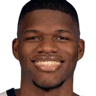

Kentavious Caldwell-Pope
2013-14 to 2025-26 · Career Map
His teams won 2 titles: 2019-20 and 2022-23. In his 980 games for 6 teams over 13 seasons they went 503–477 (51.3%), +26 games over .500, with an average final finish of 15.2. The biggest one-season rise in his career: the Los Angeles Lakers went from #20 in 2018-19 to #1 in 2019-20.
Jump to: Record by opponent · Season by season · Teammate help
Compare Kentavious Caldwell-Pope with…
Suggested, same era and similar teammate help:


Final NBA finish, season by season
Title Finals Other playoffs Missed playoffs. #1 = champion; the dashed line is last place that season. Each point opens that season's final standings.
All 30 teams ranked in 2022-23, his best finish (#1)Teammate help
 Nikola Jokic25.02 seasons
Nikola Jokic25.02 seasons LeBron James22.03 seasons
LeBron James22.03 seasons Anthony Davis7.02 seasons
Anthony Davis7.02 seasons
Career
Career records (W–L, W − L, with and without) include 2026-27 games through Nov. 22, 2026; season counts and finishes are through 2025-26. Each card opens its board in the same scope. How we count.

Latest completed seasons
2026-27 so far
Games through Nov. 22, 2026, the last game in the nightly data. These games are already in his career records above (W–L, win %, W − L, with and without, all marked "incl. 2026-27"). Season counts, final finishes and teammate help use completed seasons through 2025-26; 2026-27 joins them when the season ends.
| Team | His games | With him | Without him | Gap | On/off per 100 | Started / bench | Close games |
|---|---|---|---|---|---|---|---|
| 17 | 14–3 82.4% | N/A | N/A | +5.2 | 2–1 / 12–2 | 7–0 |
Season by season
Newest first; every header sorts. Final NBA finish is the team's rank among all teams that season (#1 = champion) and opens that season's standings. "Without him" uses the team-season window; the span line counts only the games between his first and last game for the team. The 2026-27 (to date) row counts games through Nov. 22, 2026; its final finish and playoffs are in progress.
| 2026-27 (to date) | In progress | 14–3 82.4% | In progress | 17 of 17 | 14–3 82.4% | N/A | N/A | |
| 2025-26 | #25 of 30 | 25–57 30.5% | Missed playoffs | 51 of 82 | 20–31 39.2% | 5–26 16.1%span: 0–2, gap +39.2 | +23.1 | |
| 2024-25 | #15 of 30 | 41–41 50.0% | Lost 1st round 1–4 | 77 of 82 | 38–39 49.4% | 3–2 60.0%span: 3–2, gap −10.6 | −10.6 | |
| 2023-24 | #5 of 30 | 57–25 69.5% | Lost conf semis 3–4 | 76 of 82 | 54–22 71.1% | 3–3 50.0%span: 3–3, gap +21.1 | +21.1 | |
| 2022-23 | #1 of 30 | 53–29 64.6% | Title 4–1 | 76 of 82 | 51–25 67.1% | 2–4 33.3%span: 1–4, gap +47.1 | +33.8 | |
| 2021-22 | #22 of 30 | 35–47 42.7% | Missed playoffs | 77 of 82 | 34–43 44.2% | 1–4 20.0%span: 1–2, gap +10.8 | +24.2 | |
| 2020-21 | #9 of 30 | 42–30 58.3% | Lost 1st round 2–4 | 67 of 72 | 39–28 58.2% | 3–2 60.0%span: 3–2, gap −1.8 | −1.8 | |
| 2019-20 | #1 of 30 | 52–19 73.2% | Title 4–2 | 69 of 71 | 51–18 73.9% | 1–1 50.0%span: N/A, gap N/A | +23.9 | |
| 2018-19 | #20 of 30 | 37–45 45.1% | Missed playoffs | 82 of 82 | 37–45 45.1% | N/A | N/A | |
| 2017-18 | #21 of 30 | 35–47 42.7% | Missed playoffs | 74 of 82 | 31–43 41.9% | 4–4 50.0%span: 3–3, gap −8.1 | −8.1 | |
| 2016-17 | #19 of 30 | 37–45 45.1% | Missed playoffs | 76 of 82 | 33–43 43.4% | 4–2 66.7%span: 4–2, gap −23.2 | −23.2 | |
| 2015-16 | #13 of 30 | 44–38 53.7% | Lost 1st round 0–4 | 76 of 82 | 41–35 53.9% | 3–3 50.0%span: 2–3, gap +13.9 | +3.9 | |
| 2014-15 | #23 of 30 | 32–50 39.0% | Missed playoffs | 82 of 82 | 32–50 39.0% | N/A | N/A | |
| 2013-14 | #23 of 30 | 29–53 35.4% | Missed playoffs | 80 of 82 | 28–52 35.0% | 1–1 50.0%span: 1–1, gap −15.0 | −15.0 |
On/off, starts and close games
From the lineup data, 1996-97 on, incl. 2026-27 through Nov. 22, 2026. On/off is net points per 100 possessions with him on the floor minus off, a different unit from the win-rate gaps. Started and off the bench are team records in those games; close games are those within 5 points in the last 5 minutes with him on the floor.
| 2026-27 (to date) | +5.2 | 2–1 66.7% | 12–2 85.7% | 7–0 100.0% | |
| 2025-26 | −3.8 | 4–10 28.6% | 16–21 43.2% | 9–12 42.9% | |
| 2024-25 | +1.8 | 38–39 49.4% | N/A | 16–16 50.0% | |
| 2023-24 | +15.8 | 54–22 71.1% | N/A | 23–13 63.9% | |
| 2022-23 | +17.1 | 51–25 67.1% | N/A | 21–11 65.6% | |
| 2021-22 | −5.6 | 34–43 44.2% | N/A | 23–16 59.0% | |
| 2020-21 | −0.2 | 39–28 58.2% | N/A | 15–11 57.7% | |
| 2019-20 | −3.7 | 19–7 73.1% | 32–11 74.4% | 17–9 65.4% | |
| 2018-19 | −4.0 | 9–14 39.1% | 28–31 47.5% | 13–15 46.4% | |
| 2017-18 | +2.2 | 31–43 41.9% | N/A | 14–18 43.8% | |
| 2016-17 | −6.1 | 33–42 44.0% | 0–1 0.0% | 13–21 38.2% | |
| 2015-16 | +8.9 | 41–35 53.9% | N/A | 24–13 64.9% | |
| 2014-15 | +7.4 | 32–50 39.0% | N/A | 14–24 36.8% | |
| 2013-14 | +5.5 | 17–24 41.5% | 11–28 28.2% | 6–10 37.5% |
Teammate help by season
Two separate numbers per season, each with every teammate that adds to it. Help this season = Teammates Score points for honors won that season by teammates who shared a game with him. Help coming in = the same teammates' honors from the season before. How help works.
- 2026-27
 PhiladelphiaHelp this season: pending (honors are awarded after the season)
PhiladelphiaHelp this season: pending (honors are awarded after the season)Help coming in (2025-26 honors of teammates he has played with so far): 8.25 = 4 Jaylen Brown + 3 Tyrese Maxey + 1 LeBron James + 0.25 VJ Edgecombe
- 2025-26
 Memphis
Memphis

Cedric Coward All-Rookie 1st0.2546 gHelp this season: 0.25+ = 0.25 Cedric Coward
More: help coming in and other teammates
Help coming in (teammates' honors the season before): 2+ = 1.5 Jaren Jackson Jr + 0.25 Jaylen Wells + 0.25 Zach Edey
Other teammates (no honors that season): Jaylen Wells 50 g, Cam Spencer 49 g, Jock Landale 44 g, Jaren Jackson Jr 44 g, Santiago Aldama 42 g, Vince Williams Jr 34 g, GG Jackson 31 g, John Konchar 30 g, Olivier-Maxence Prosper 28 g, Ja Morant 19 g, Javon Small 18 g, Jahmai Mashack 11 g, Zach Edey 11 g, Christian Koloko 10 g and 9 more
- 2024-25
 OrlandoHelp this season: 0, no honored teammate
OrlandoHelp this season: 0, no honored teammateMore: help coming in
Help coming in (teammates' honors the season before): 1.5 = 1 Paolo Banchero + 0.5 Jalen Suggs
- 2023-24
 Denver
Nikola Jokic MVPAll-NBA 1stAll-Star1173 g
Denver
Nikola Jokic MVPAll-NBA 1stAll-Star1173 g
Help this season: 11 = 11 Nikola Jokic
More: help coming in and other teammates
Help coming in (teammates' honors the season before): 14 = 14 Nikola Jokic
Other teammates (no honors that season): Reggie Jackson 76 g, Christian Braun 76 g, Michael Porter 76 g, Peyton Watson 74 g, Aaron Gordon 67 g, Zeke Nnaji 54 g, Jamal Murray 54 g, Justin Holiday 52 g, Julian Strawther 47 g, DeAndre Jordan 32 g, Jalen Pickett 26 g, Collin Gillespie 22 g, Braxton Key 20 g, Jay Huff 19 g and 1 more
- 2022-23Denver
Nikola Jokic Finals MVPAll-NBA 2ndAll-Star1468 g
Help this season: 14 = 14 Nikola Jokic
More: help coming in and other teammates
Help coming in (teammates' honors the season before): 11.125 = 11 Nikola Jokic + 0.125 Bones Hyland
Other teammates (no honors that season): Bruce Brown 74 g, Christian Braun 70 g, Aaron Gordon 65 g, Jamal Murray 64 g, Michael Porter 60 g, Vlatko Cancar 54 g, Jeff Green 52 g, Zeke Nnaji 47 g, Bones Hyland 40 g, Ishmael Smith 37 g, DeAndre Jordan 33 g, Davon Reed 33 g, Peyton Watson 18 g, Thomas Bryant 17 g and 2 more
- 2021-22
 WashingtonHelp this season: 0, no honored teammate
WashingtonHelp this season: 0, no honored teammateMore: help coming in
Help coming in (teammates' honors the season before): 3 = 3 Bradley Beal
- 2020-21
 LA Lakers
LeBron James All-NBA 2ndAll-Star441 gAnthony Davis All-Star132 g
LA Lakers
LeBron James All-NBA 2ndAll-Star441 gAnthony Davis All-Star132 g
Help this season: 5 = 4 LeBron James + 1 Anthony Davis
More: help coming in and other teammates
Help coming in (teammates' honors the season before): 21.5 = 15 LeBron James + 6 Anthony Davis + 0.5 Montrezl Harrell
Other teammates (no honors that season): Montrezl Harrell 65 g, Kyle Kuzma 63 g, Talen Horton-Tucker 60 g, Dennis Schroeder 56 g, Markieff Morris 56 g, Alex Caruso 55 g, Wesley Matthews 53 g, Marc Gasol 47 g, Alfonzo McKinnie 37 g, Ben McLemore 20 g, Andre Drummond 20 g, Devontae Cacok 20 g, Kostas Antetokounmpo 15 g, Quinn Cook 14 g and 2 more
- 2019-20LA Lakers
LeBron James Finals MVPAll-NBA 1stAll-Star1565 gAnthony Davis All-NBA 1stAll-StarAll-Def 1st661 g
Help this season: 21 = 15 LeBron James + 6 Anthony Davis
More: help coming in and other teammates
Help coming in (teammates' honors the season before): 4 = 3 LeBron James + 1 Anthony Davis
Other teammates (no honors that season): Dwight Howard 67 g, Danny Green 66 g, JaVale McGee 66 g, Alex Caruso 63 g, Kyle Kuzma 60 g, Avery Bradley 49 g, Rajon Rondo 48 g, Jared Dudley 44 g, Quinn Cook 43 g, Troy Daniels 41 g, Markieff Morris 12 g, JR Smith 5 g, Dion Waiters 5 g, Talen Horton-Tucker 4 g and 2 more
- 2018-19LA Lakers
LeBron James All-NBA 3rdAll-Star355 g
Help this season: 3 = 3 LeBron James
More: help coming in and other teammates
Help coming in (teammates' honors the season before): 5.875 = 5.5 LeBron James + 0.25 Kyle Kuzma + 0.125 Lonzo Ball
Other teammates (no honors that season): JaVale McGee 75 g, Kyle Kuzma 70 g, Lance Stephenson 68 g, Josh Hart 67 g, Brandon Ingram 52 g, Tyson Chandler 48 g, Lonzo Ball 47 g, Rajon Rondo 46 g, Moritz Wagner 43 g, Sviatoslav Mykhailiuk 39 g, Ivica Zubac 33 g, Michael Beasley 26 g, Alex Caruso 25 g, Johnathan Williams 24 g and 6 more
- 2017-18LA Lakers
 Kyle Kuzma All-Rookie 1st0.2569 g
Kyle Kuzma All-Rookie 1st0.2569 g Lonzo Ball All-Rookie 2nd0.12548 g
Lonzo Ball All-Rookie 2nd0.12548 g
Help this season: 0.375 = 0.25 Kyle Kuzma + 0.125 Lonzo Ball
More: help coming in and other teammates
Help coming in (teammates' honors the season before): 4.125 = 4 Isaiah Thomas + 0.125 Brandon Ingram
Other teammates (no honors that season): Julius Randle 74 g, Brook Lopez 69 g, Josh Hart 56 g, Brandon Ingram 52 g, Tyler Ennis 48 g, Corey Brewer 46 g, Jordan Clarkson 45 g, Ivica Zubac 41 g, Larry Nance Jr 34 g, Alex Caruso 30 g, Andrew Bogut 18 g, Travis Wear 17 g, Isaiah Thomas 17 g, Thomas Bryant 14 g and 6 more
- 2016-17
 DetroitHelp this season: 0, no honored teammate
DetroitHelp this season: 0, no honored teammateMore: help coming in
Help coming in (teammates' honors the season before): 3 = 3 Andre Drummond
- 2015-16Detroit
 Andre Drummond All-NBA 3rdAll-Star376 g
Andre Drummond All-NBA 3rdAll-Star376 g
Help this season: 3 = 3 Andre Drummond
More: help coming in and other teammates
Help coming in (teammates' honors the season before): 0
Other teammates (no honors that season): Aron Baynes 75 g, Reggie Jackson 75 g, Marcus Morris 75 g, Stanley Johnson 67 g, Anthony Tolliver 66 g, Steve Blake 55 g, Ersan Ilyasova 49 g, Reggie Bullock 35 g, Darrun Hilliard 32 g, Tobias Harris 26 g, Brandon Jennings 19 g, Joel Anthony 18 g, Spencer Dinwiddie 11 g, Justin Harper 5 g and 1 more
- 2014-15DetroitHelp this season: 0, no honored teammate
- 2013-14DetroitHelp this season: 0, no honored teammate
More: help coming in
Help coming in (teammates' honors the season before): 0.25 = 0.125 Kyle Singler + 0.125 Andre Drummond
Record against each opponent
- Best regular-season record against one franchise: 14–7 (66.7%) against the Detroit Pistons in 21 games.
- Toughest regular-season record against one franchise: 11–24 (31.4%) against the Toronto Raptors in 35 games.
- Most playoff series against one franchise: 2 against the Miami Heat, 2–0 in series and 8–3 in games.
Regular season, incl. 2026-27 through Nov. 22, 2026: 980 games, 503–477, against 30 franchises.
Grouped by franchise (named as today); game lists keep each team's name that season. Filters and the tab are kept in the URL, so a filtered view can be shared.
| Games list | |||||||
|---|---|---|---|---|---|---|---|
| 37 | 15–22 | 40.5% | −7 | N/A | 2013-14 to 2025-26 | ||
| 37 | 17–20 | 45.9% | −3 | N/A | 2013-14 to 2026-27 | ||
| 37 | 19–18 | 51.4% | +1 | N/A | 2013-14 to 2025-26 | ||
| 36 | 18–18 | 50.0% | 0 | N/A | 2013-14 to 2026-27 | ||
| 36 | 18–18 | 50.0% | 0 | N/A | 2013-14 to 2025-26 | ||
| 35 | 17–18 | 48.6% | −1 | N/A | 2013-14 to 2025-26 | ||
| 35 | 17–18 | 48.6% | −1 | 0–1 (1–4 in games) | 2013-14 to 2026-27 | ||
| 35 | 22–13 | 62.9% | +9 | N/A | 2013-14 to 2026-27 | ||
| 35 | 18–17 | 51.4% | +1 | 0–1 (0–4 in games) | 2013-14 to 2026-27 | ||
| 35 | 15–20 | 42.9% | −5 | N/A | 2013-14 to 2025-26 | ||
| 35 | 19–16 | 54.3% | +3 | 2–0 (8–3 in games) | 2013-14 to 2025-26 | ||
| 35 | 11–24 | 31.4% | −13 | N/A | 2013-14 to 2026-27 | ||
| 34 | 22–12 | 64.7% | +10 | N/A | 2013-14 to 2026-27 | ||
| 34 | 20–14 | 58.8% | +6 | N/A | 2013-14 to 2026-27 | ||
| 34 | 22–12 | 64.7% | +10 | N/A | 2013-14 to 2025-26 | ||
| 34 | 13–21 | 38.2% | −8 | 1–0 (4–1 in games) | 2013-14 to 2025-26 | ||
| 34 | 17–17 | 50.0% | 0 | 1–0 (4–1 in games) | 2013-14 to 2025-26 | ||
| 34 | 19–15 | 55.9% | +4 | N/A | 2013-14 to 2025-26 | ||
| 32 | 17–15 | 53.1% | +2 | 1–1 (7–5 in games) | 2013-14 to 2025-26 | ||
| 32 | 14–18 | 43.8% | −4 | N/A | 2013-14 to 2026-27 | ||
| 32 | 18–14 | 56.2% | +4 | N/A | 2013-14 to 2026-27 | ||
| 32 | 20–12 | 62.5% | +8 | 1–1 (6–5 in games) | 2013-14 to 2025-26 | ||
| 32 | 20–12 | 62.5% | +8 | N/A | 2013-14 to 2025-26 | ||
| 32 | 15–17 | 46.9% | −2 | N/A | 2013-14 to 2025-26 | ||
| 31 | 18–13 | 58.1% | +5 | N/A | 2013-14 to 2024-25 | ||
| 30 | 15–15 | 50.0% | 0 | N/A | 2013-14 to 2024-25 | ||
| 30 | 15–15 | 50.0% | 0 | N/A | 2013-14 to 2025-26 | ||
| 26 | 11–15 | 42.3% | −4 | 1–0 (4–1 in games) | 2013-14 to 2025-26 | ||
| 21 | 14–7 | 66.7% | +7 | N/A | 2017-18 to 2026-27 | ||
| 18 | 7–11 | 38.9% | −4 | 2–0 (8–1 in games) | 2013-14 to 2025-26 |
Rows add up to his career record in his games. A playoff series counts when he played in it; early round-robin games show as games only. How we count.
Playoffs, with and without him
| 2024-25 | Lost in the first round 1–4 to | #15 of 30 | 5 of 5 | 1–4 20.0% | N/A | N/A | |
| 2023-24 | Lost in the conference semifinals 3–4 to | #5 of 30 | 12 of 12 | 7–5 58.3% | N/A | N/A | |
| 2022-23 | Won the title 4–1 over | #1 of 30 | 20 of 20 | 16–4 80.0% | N/A | N/A | |
| 2020-21 | Lost in the first round 2–4 to | #9 of 30 | 5 of 6 | 2–3 40.0% | 0–1 0.0% | +40.0 | |
| 2019-20 | Won the title 4–2 over | #1 of 30 | 21 of 21 | 16–5 76.2% | N/A | N/A | |
| 2015-16 | Lost in the first round 0–4 to | #13 of 30 | 4 of 4 | 0–4 0.0% | N/A | N/A |
Arrival and departure
Team wins per 82 games the season before he arrived vs his first season there, and his last season vs the season after he left. He leaves a team only when his next season with games is for another team (or he never plays again); whole seasons he missed and came back from are one "Missed" row with the team's record without him. Per 82 so short seasons compare fairly. These are team records, not a measure of what he did.
| Arrived | 2025-26 | 2024-25: 48–34 48.0 per 82 | 2025-26: 25–57 25.0 per 82 | −23.0 wins | |
| Left | after 2024-25 | 2024-25: 41–41 41.0 per 82 | 2025-26: 45–37 45.0 per 82 without him | +4.0 wins | |
| Arrived | 2024-25 | 2023-24: 47–35 47.0 per 82 | 2024-25: 41–41 41.0 per 82 | −6.0 wins | |
| Left | after 2023-24 | 2023-24: 57–25 57.0 per 82 | 2024-25: 50–32 50.0 per 82 without him | −7.0 wins | |
| Arrived | 2022-23 | 2021-22: 48–34 48.0 per 82 | 2022-23: 53–29 53.0 per 82 | +5.0 wins | |
| Left | after 2021-22 | 2021-22: 35–47 35.0 per 82 | 2022-23: 35–47 35.0 per 82 without him | +0.0 wins | |
| Arrived | 2021-22 | 2020-21: 34–38 38.7 per 82 | 2021-22: 35–47 35.0 per 82 | −3.7 wins | |
| Left | after 2020-21 | 2020-21: 42–30 47.8 per 82 | 2021-22: 33–49 33.0 per 82 without him | −14.8 wins | |
| Arrived | 2017-18 | 2016-17: 26–56 26.0 per 82 | 2017-18: 35–47 35.0 per 82 | +9.0 wins | |
| Left | after 2016-17 | 2016-17: 37–45 37.0 per 82 | 2017-18: 39–43 39.0 per 82 without him | +2.0 wins | |
| Debut | 2013-14 | 2012-13: 29–53 29.0 per 82 | 2013-14: 29–53 29.0 per 82 | +0.0 wins |
Best duos
Team record in regular-season games both played, top 10 by win %, at least 50 games together, incl. 2026-27 through Nov. 22, 2026.
 Dwight Howard
51–16 76.1%
Dwight Howard
51–16 76.1% Danny Green
50–16 75.8%
Danny Green
50–16 75.8% Quinn Cook
41–16 71.9%
Quinn Cook
41–16 71.9%- Anthony Davis
66–27 71.0%
 Jamal Murray
83–35 70.3%
Jamal Murray
83–35 70.3% Zeke Nnaji
71–30 70.3%
Zeke Nnaji
71–30 70.3%- Nikola Jokic
99–42 70.2%
 Peyton Watson
64–28 69.6%
Peyton Watson
64–28 69.6%- Christian Braun 101–45 69.2%
 Michael Porter
94–42 69.1%
Michael Porter
94–42 69.1%
With and without his teammates
His 12 teammates with the most regular-season games together. "Together" is the team's record in the games both played for it; "Without him" is the team's record in the games Kentavious Caldwell-Pope played for that team while the teammate was on it (between the teammate's first and last game for the team, the appearance span) and the teammate did not play. Fewer than 20 games without him: no gap. Games through Nov. 22, 2026. How we count.
- Andre DrummondDetroit 2013-14 to 2016-17; LA Lakers 2020-21
- Together
- 143–189 43.1%
- Without him
- 3–3 50.0%
- Gap
- Too few games without him
- Kyle KuzmaLA Lakers 2017-18 to 2020-21; Washington 2021-22
- Together
- 173–152 53.2%
- Without him
- 6–14 30.0%
- Gap
- 23.2 points lower
 Reggie JacksonDetroit 2014-15 to 2016-17; Denver 2022-23 to 2023-24
Reggie JacksonDetroit 2014-15 to 2016-17; Denver 2022-23 to 2023-24- Together
- 132–106 55.5%
- Without him
- 4–3 57.1%
- Gap
- Too few games without him
- LeBron JamesLA Lakers 2018-19 to 2020-21; Philadelphia 2026-27
- Together
- 114–60 65.5%
- Without him
- 24–31 43.6%
- Gap
- 21.9 points lower
 Alex CarusoLA Lakers 2017-18 to 2020-21
Alex CarusoLA Lakers 2017-18 to 2020-21- Together
- 98–75 56.6%
- Without him
- 40–44 47.6%
- Gap
- 9.0 points lower
 Greg MonroeDetroit 2013-14 to 2014-15; Washington 2021-22
Greg MonroeDetroit 2013-14 to 2014-15; Washington 2021-22- Together
- 54–97 35.8%
- Without him
- 7–4 63.6%
- Gap
- Too few games without him
 Marcus MorrisDetroit 2015-16 to 2016-17
Marcus MorrisDetroit 2015-16 to 2016-17- Together
- 73–76 49.0%
- Without him
- 1–1 50.0%
- Gap
- Too few games without him
- Christian BraunDenver 2022-23 to 2023-24
- Together
- 101–45 69.2%
- Without him
- 4–2 66.7%
- Gap
- Too few games without him
 Aron BaynesDetroit 2015-16 to 2016-17
Aron BaynesDetroit 2015-16 to 2016-17- Together
- 71–74 49.0%
- Without him
- 2–2 50.0%
- Gap
- Too few games without him
- Nikola JokicDenver 2022-23 to 2023-24
- Together
- 99–42 70.2%
- Without him
- 6–5 54.5%
- Gap
- Too few games without him
 JaVale McGeeLA Lakers 2018-19 to 2019-20
JaVale McGeeLA Lakers 2018-19 to 2019-20- Together
- 85–56 60.3%
- Without him
- 3–7 30.0%
- Gap
- Too few games without him
 Ishmael SmithDetroit 2016-17; Washington 2021-22; Denver 2022-23
Ishmael SmithDetroit 2016-17; Washington 2021-22; Denver 2022-23- Together
- 66–73 47.5%
- Without him
- 28–11 71.8%
- Gap
- 24.3 points higher